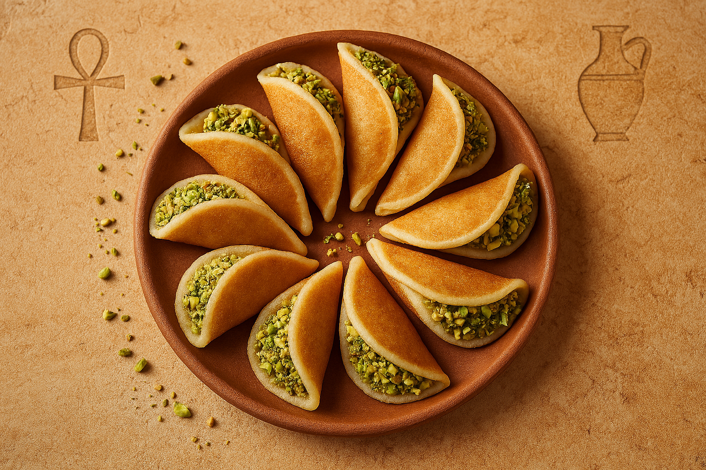

Mini Stuffed Pancakes
Qatayef are delicious stuffed mini pancakes popular during Ramadan. They are filled with nuts or cream, folded and fried, then soaked in sweet syrup.
Ingredients:
- 1 cup flour
- 1/4 cup fine semolina
- 1 tsp sugar
- 1 tsp yeast
- Pinch of salt
- 1 1/4 cup warm water
- For filling: chopped nuts or sweet cream
- For syrup: sugar, water, lemon juice, rose water
- Oil for frying
Instructions:
- Mix flour, semolina, sugar, yeast, and salt. Add warm water and whisk well. Let it rest 30 mins.
- Heat a pan and pour small circles. Cook on one side only until bubbles form. Don’t flip!
- Fill with nuts or cream and fold into half-moons, sealing the edges.
- Fry in hot oil until golden. Dip in syrup immediately and serve warm.